First, I created a new workspace folder and cloned my online repo into it using the git clone command.
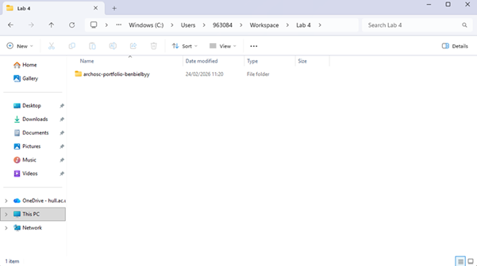
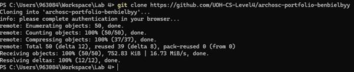
I used Visual Studio Code to create two files, style.css and script.js in the same folder where my index.html lives.
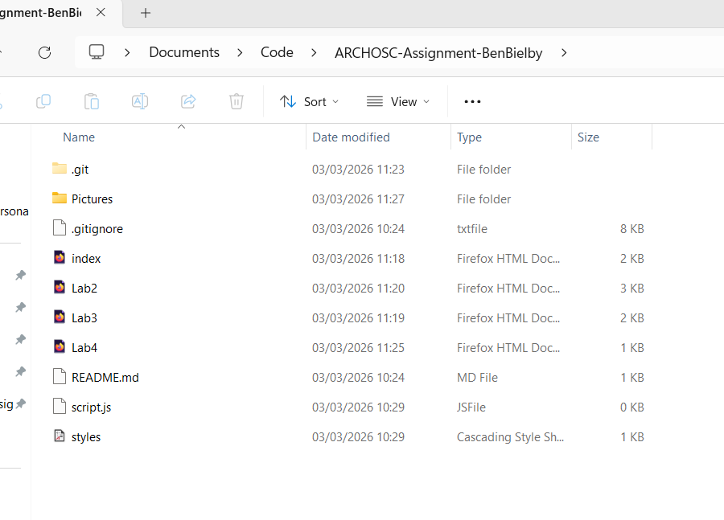
To add more functionality to the website, I added a reference to the script.js file I just created at the bottom of the body section. I also referenced the new styles.css in the header which will give my website a more user-friendly and stylized look.
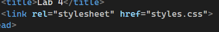
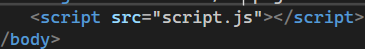
I then created a separate page for each lab, copying the same style.css and script.js reference in each one. The different pages are needed so that each Lab is in its own place and there is clear file structure, so that I can add a navbar/reference to each page.
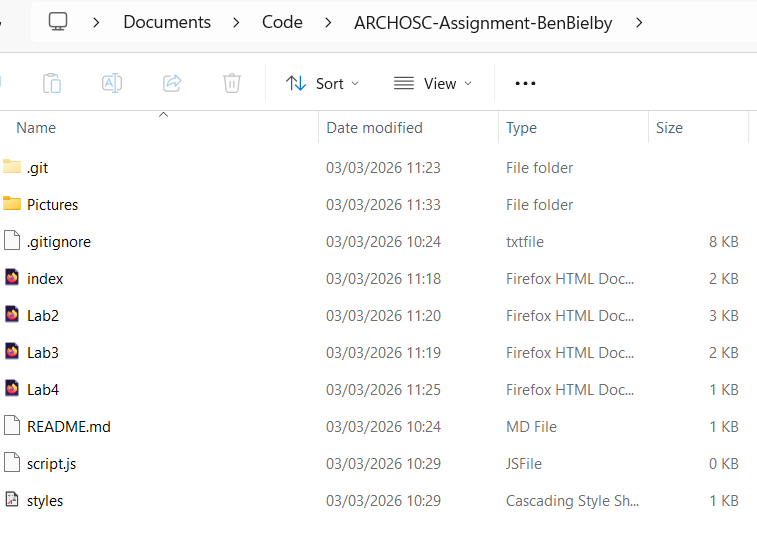
The CSS I added in the styles.css is being referenced in the header of each of my pages. It applies an orange colour to all h1 headers.
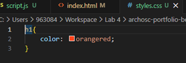
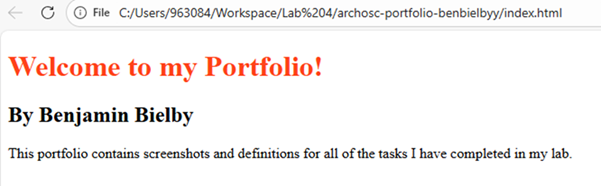
The CSS here is creating a class that affects the colour of whatever it is assigned to. It is useful so that we don’t have to repeat code each time we want to use the same colour and can just reference the class instead.
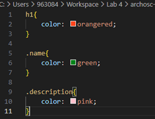
I added javascript code that defines the class in the console and tested it works by using F12 and opening the console, then hovering over each class to show it highlights the correct area.
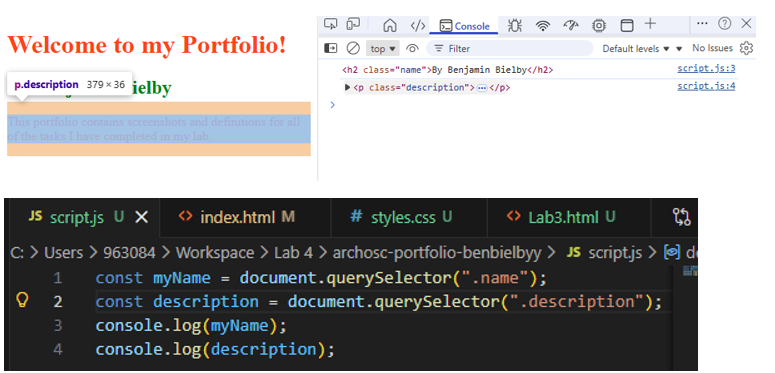
I used this code in my styles.css to define how my navbar should look.
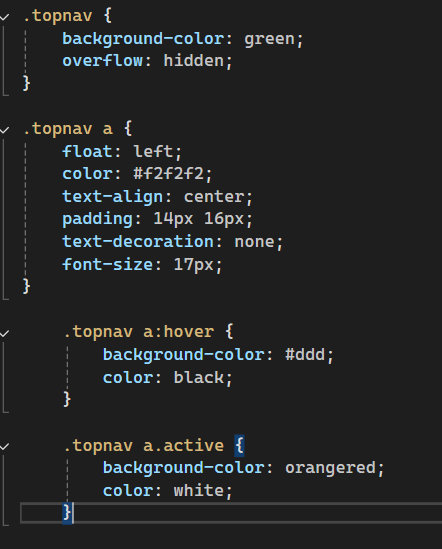
Then in my index.html I used a div with the new class I made to implement the navbar.
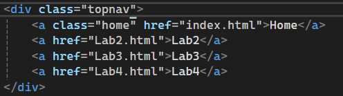
Finally, I added a button that allows me to toggle dark mode by creating a new class that changes the background colour to black. I then made a function in the script.js file that turns the dark mode on or off when it is called. The final step was to implement it in the html file, where I made a button that called the function when it is clicked, successfully creating a dark mode toggle.
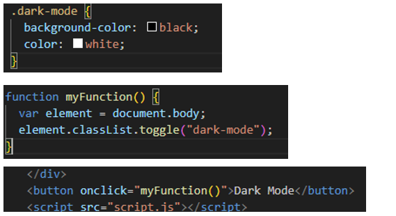
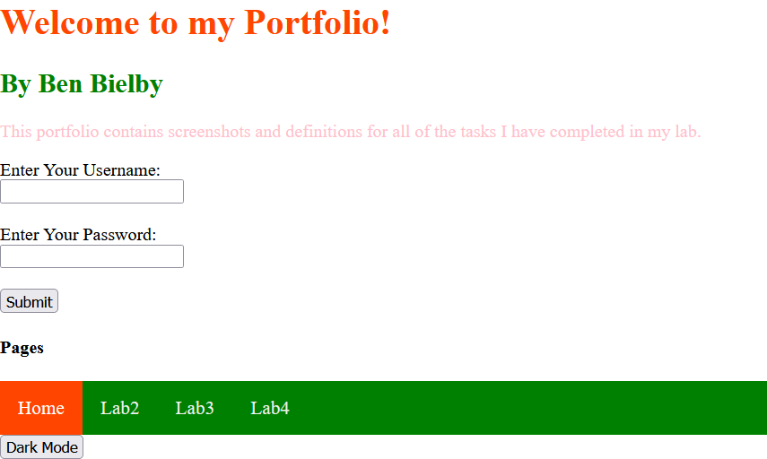
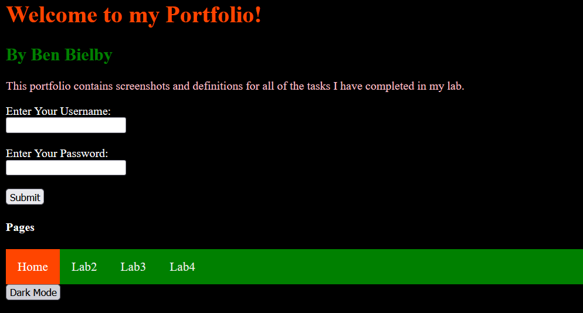